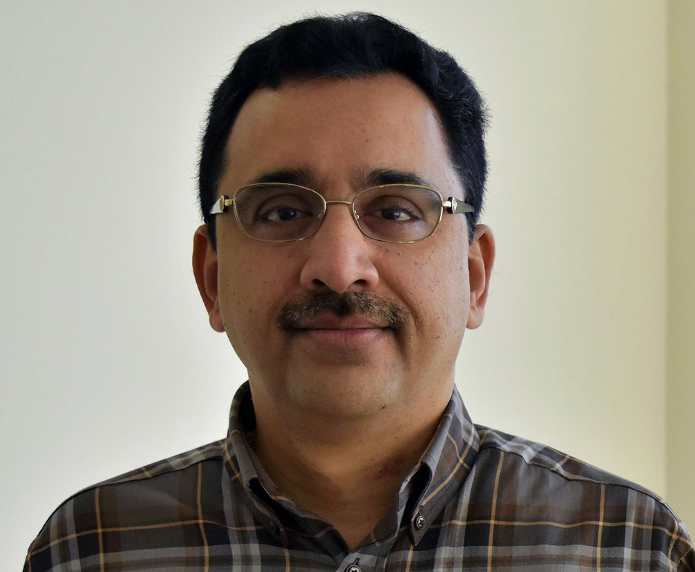
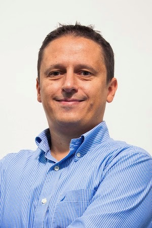
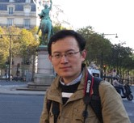

Title: “Mulsemedia”-based Collaborative Mixed/Virtual Reality Environments
Lecturer(s): Balakrishnan Prabhakaran (University of Texas at Dallas, USA)
Time: 9:00-12:00, Monday, July 11, 2016
Room: St. Helens
Title: Interactive Search in Video & Lifelog Repositories
Lecturer(s): Frank Hopfgartner (University of Glasgow, UK), Klaus Schoeffmann (Klagenfurt University, Austria)
Time: 9:00-12:00, Monday, July 11, 2016
Room: Vashon
Slides: Please
click here to view the slides.
Title: Graph Signal Processing for Image Compression & Restoration
Lecturer(s): Gene Cheung (National Institute of Informatics, Japan), Xianming Liu (Harbin Institute of Technolog, China)
Time: 9:00-12:00, Monday, July 11, 2016
Room: Grand Crescent
Slides: The slides of this tutorial can be fount at the following links:
icme16tutorial_coding_jul2016.pdf
icme16tutorial_restoration_jul2016.pdf
icme16tutorial_softDecoding_jul2016.pdf
Title: Situation Recognition from Multimodal Data
Lecturer(s): Vivek Singh (Rutgers University, USA), Siripen Pongpaichet (University of California at Irvine, USA), Ramesh Jain (University of California at Irvine, USA)
Time: 14:00-17:00, Monday, July 11, 2016
Room: Vashon
Slides: Please click here to view the slides.
Title: Quality of Experience in Multimedia Systems and Services
Lecturer(s): Christian
Timmerer (Alpen-Adria-Universität Klagenfurt, Austria), Fernando
Pereira (Instituto de Telecomunicações, IST, Portugal), Touradj
Ebrahimi (EPFL, Switzerland)
Time: 14:00-17:00, Monday, July 11, 2016
Room: St. Helens
Slides: Please click here to view the slides.
Title: High Efficiency Video Coding – Coding Tools and Specification
Lecturer(s): Mathias Wien (RWTH Aachen University, Germany)
Time: 14:00-17:00, Monday, July 11, 2016
Room: Grand Crescent
Slides: Please click here to view the slides.
"Mulsemedia"-based Collaborative Mixed/Virtual Reality Environments
Abstract
Multi-sensorial media – “mulsemedia” – involves multi-modal sensors,
using media such as video (2D as well as 3D), touch/haptic, GPS,
inertial and other wearable sensors, for generating and consuming data.
For instance, instructions might be delivered through head-mounted
displays based what users see (video processing), where the user is
(location sensing), and what the user is doing (wearable sensor data
processing). In such immersive applications, the content consumed by a
user is influenced greatly by the content s/he generated. However, this
aspect also shows the stark contrast in delay experienced – as we know,
there is no delay in experiencing the data generated by oneself whereas
there is a finite delay in experiencing the delays generated by the
collaborators. This results in vanishing role differences and delays
between content producers & consumers. More importantly, this
results in variations in experience depending on the type of modality
and the type of experience it causes – visual, aural, or physical
(touch, motor, etc). From the point of view of collaborative virtual
environments, it has been established that humans are more sensitive to
delays some of the sensorial media (e.g., haptic sensors). In this
tutorial, we identify and discuss the following research challenges in
handling these multi-sensorial media or “mulsemedia” data and
applications:
- What modalities do we combine
for pattern recognition? How do we combine the modalities – in terms of
different times at which they are generated as well as in terms of
their priorities?
- How do we use the recognized patterns to create mulsemedia-based immersive environments?
- How
do we design “flexible” synchronization methodologies that can consider
higher priorities for “sensitive” data while still managing to stay in
sync with other modalities data?
- When
multiple, distributed collaborators using multiple modalities are
involved in carrying out realtime tasks, how do we define “global
consistency” of operations being carried out?
- What
is the trade off between achieving this global consistency (assuming we
can define that) and the flexible synchronization strategies?
Instructor
Balakrishnan Prabhakaran, Department of Computer Science, University of Texas at Dallas
|

|
Balakrishnan Prabhakaran is a Professor in the faculty of Computer
Science Department, University of Texas at Dallas. Dr. Prabhakaran
received the prestigious NSF CAREER Award FY 2003 for his proposal on
Animation Databases. He was selected as an ACM Distinguished Scientist
in 2011 and is currently a IEEE Senior Member. He received the Best
Associate Editor for 2015, from Springer’s Multimedia Systems Journal.
Dr Prabhakaran is a Member of the Executive Council of the ACM Special
Interest Group on Multimedia (SIGMM) and is the Co-Chair of IEEE
Technical Committee on Multimedia Computing (TCMC) Special Interest
Group on Video Analytics (SIGVA). Dr. Prabhakaran is the General
Co-Chair of the IEEE International Conference on Health Informatics
(ICHI) 2015. He was also a General Co-Chair of ACM International
Conference on Multimedia Retrieval 2013 (ICMR 2013), IEEE Haptic,
Audio, and Visual Environments (HAVE) 2014, a General Co-chair of ACM
Multimedia 2011, and ACM Multimedia and Security (MM&Sec) 2007.
Prof Prabhakaran's research has been funded by Federal Agencies such as
the National Science Foundation (NSF), USA Army Research Office (ARO),
and the US-IGNITE Program. |
Situation Recognition from Multimodal Data
Abstract
Situation recognition is the problem of deriving actionable insights
from heterogeneous, real-time, big multimedia data to benefit human
lives and resources in different applications. This tutorial will
discuss the recent developments towards converting multitudes of data
streams including weather patterns, stock prices, social media, traffic
information, and disease incidents into actionable insights. This
builds upon a long history of multimedia research on building concept
recognition approaches like entity resolution, object detection, and
scene recognition, to understand different aspects of the observed
world. At the same time it pushes the envelope beyond detecting intra-media concepts
(i.e. those which manifest themselves, and can be detected within a
single media object e.g. a tree, or a chair in an image), to detecting real-world concepts
(i.e. those which occur in real world, are constantly evolving, and
inherently manifest themselves over heterogeneous multimedia streams
from numerous sources). For example, situation recognition goes beyond
the problem of creating a tree detector and/or testing it over millions
of images to that of using a stream of billions of images and other
available data to detect seasonal patterns, plant disease spreads,
deforestation trends, or global warming. This tutorial will bring
together the work by multiple researchers working in the area of
situation recognition both within and outside the multimedia research
community. The attendees would be introduced to the different
interpretations of situations across multiple fields, and how it builds
upon and extends the efforts on object detection, scene recognition and
so on. The tutorial will provide a review of recent efforts within the
multimedia community towards detecting real-time situations, along with
multiple practical situation recognition approaches, existing tools and
applications. Specific attention will be paid to discussing the
relevant open research challenges for the community to advance the
state of the art in situation recognition.
Slides
Please click
here to view the slides.Instructors
Vivek Singh, Rutgers University, USA
Siripen Pongpaichet, University of California, Irvine, USA
Ramesh Jain, University of California, Irvine, USA
|
|
Vivek Singh is an Assistant Professor in the School of Communication
and Information at Rutgers University and a Visiting Professor at MIT
Media Lab. Dr. Singh holds a Ph.D. in Information and Computer Science
from the University of California, Irvine and received his
post-doctoral training at MIT Media Lab. His work has been published at
multiple leading scientific venues (Science, Proceedings of the IEEE),
has received significant media coverage (BBC, New York Times, National
Public Radio), and has received two best paper awards. He was selected
as one of the ‘Emerging Leaders in Multimedia Research’ by IBM Research
Labs in 2009 and he won the 2013 ‘Big Data for Social Good’ datathon
organized by Telefónica, the Open Data Institute and the MIT. He was
recently invited as a multimedia rising star speaker to the SIGMM
inaugural workshop on multimedia frontiers, 2015. His research
interests lie at the intersection of Big Data, Computational Social
Science, and Multimedia Information Systems. Homepage: http://wp.comminfo.rutgers.edu/vsingh.
|
|
|
Siripen Pongpaichet is a PhD candidate in Computer Science at
University of California, Irvine. She is working with Professor Ramesh
Jain, in Social Life Networks (SLN) lab. The fundamental goal of SLNs
is to identify people’s needs in a given situation, locate appropriate
resources to meet those needs, and connect them efficiently,
effectively and promptly. She has been developing a macro
situation-modeling platform for SLNs called EventShop. This framework
allows for ingestion of different data streams and converts them to a
unifying space, time, and thematic (STT) representation. Her current
research interests are in event information systems, database
management systems, and situation recognition. Her PhD research topic
is focused on multi-resolution spatial-temporal analysis across
multimedia streams. Homepage: http://www.ics.uci.edu/~spongpai/.
|
|
|
Ramesh Jain is an entrepreneur, researcher, and educator. He is a
Donald Bren Professor in Information & Computer Sciences at
University of California, Irvine where he is doing research in Event
Web and experiential computing. Earlier he served on faculty of Georgia
Tech, University of California at San Diego, The university of
Michigan, Ann Arbor, Wayne State University, and Indian Institute of
Technology, Kharagpur. He is a Fellow of ACM, IEEE, AAAI, IAPR, and
SPIE. His current research interests are in searching multimedia data
and creating EventWebs for experiential computing. He is the recipient
of several awards including the ACM SIGMM Technical Achievement Award
2010. Ramesh co-founded several companies, managed them in initial
stages, and turned them over to professional management. Homepage: https://ngs.ics.uci.edu.
|
Quality of Experience in Multimedia Systems and Services: A Journey Towards the Quality of Life
Abstract
In computing and communications systems, quality is often difficult to
define. Attempts to understand this concept date back to Aristotle, who
included quality as one of his 10 categories of human apprehension. ISO
standard 8402:1986 defines quality as “the totality of features and
characteristics of a product or service that bears its ability to
satisfy stated or implied needs,” which embraces objective as well as
subjective parameters. In practice, however, quality could be compared
to the elephant in the famous Indian parable about a group of blind men
who each feels a different part of the animal and, thus, they disagree
as to what it looks like. Under the auspices of the European COST
(Cooperation in Science and Technology) framework, Action IC 1003, or
Qualinet – the European Network on Quality of Experience in Multimedia
Systems and Services (www.qualinet.eu) – defines quality as the outcome of an individual’s comparison and
judgment process. It includes perception, reflection about the
perception, and the description of the outcome. In contrast to
definitions which see quality as “qualitas”, i.e. a set of inherent
characteristics, we consider quality in terms of the evaluated
excellence or goodness, of the degree of need fulfillment, and in terms
of a “quality event” [which is] an observable occurrence ... determined
in space (i.e. where it occurs), time (i.e. when it occurs), and
character (i.e. what can be observed). The goal of this tutorial is to discuss three
aspects of quality suggested by this definition: an introduction to
quality of experience (QoE), applications of QoE with respect to
adaptive video streaming and sensory experience, and an approach
towards the quality of life (QoL) including the challenges quality
assessment poses to system designers. Slides
Please click here to view the slides.
Instructors
Christian Timmerer, Alpen-Adria-Universität Klagenfurt, Austria
Fernando Pereira, Instituto de Telecomunicações, IST, Portugal
Touradj Ebrahimi, Ecole Polytechnique Fédérale de Lausanne (EPFL), Switzerland
|

|
Christian Timmerer is an Associate Professor at Alpen-Adria-Universität
Klagenfurt, Austria and his research focus is on immersive multimedia
communication, streaming, adaptation, and quality of experience. He has
more than 150 publications in that area and was the general chair of
WIAMIS 2008, QoMEX 2013, and ACM MMSys 2016. He participated in several
EC-funded projects, notably DANAE, ENTHRONE, P2P-Next, ALICANTE,
SocialSensor, and the COST Action IC1003 QUALINET. Dr. Timmerer also
participated in ISO/MPEG work for several years – notably, in the area
of MPEG-21, MPEG-M, MPEG-V, and MPEG-DASH. He is a co-founder of
bitmovin and CIO | Head of Research and Standardization. Follow him on http://www.twitter.com/timse7 and subscribe to his blog http://blog.timmerer.com.
|
|
|
Fernando Pereira is a Professor with the Electrical and Computer
Engineering Department, Instituto de Telecomunicações, IST. He has
authored more than 200 papers and his research interests include video
analysis, processing, coding and description, and interactive
multimedia services. Dr. Pereira was an IEEE Distinguished Lecturer in
2005 and since 2013 he has been the Editor-in-Chief of IEEE Journal of
Selected Topics in Signal Processing. He has been participating in the
work of ISO/MPEG for many years, particularly, the Head of the
Portuguese delegation, the Chairman of the MPEG Requirements Group, and
chairing many ad hoc groups related to the MPEG-4 and MPEG-7 standards.
He is a EURASIP Fellow for contributions to digital video
representation technologies and standards. He is an Area Editor of
Signal Processing: Image Communication. [http://www.img.lx.it.pt/~fp/].
|
|
|
Touradj Ebrahimi is a professor at the EPFL, where he is active in
teaching and research of multimedia signal processing. He is also the
convener of the JPEG committee, which has produced a family of
standards that have revolutionized the world of imaging. He represents
Switzerland as the head of its delegation to MPEG and JPEG standards
and has contributed technical solutions to a large number of JPEG and
MPEG standards and particularly in MPEG-2, MPEG-4, AVC/H.264, MVC,
3DVC, and HEVC/H.265. Ebrahimi serves as consultant, evaluator and
expert for European Commission projects, for various governmental
funding agencies in Europe, and also advises a few venture capital
companies in Switzerland as a scientific and technical auditor. [http://people.epfl.ch/touradj.ebrahimi].
|
Graph Signal Processing for Image Compression & Restoration
Abstract
Graph signal processing (GSP) is the study of discrete signals that
live on structured data kernels described by graphs. By allowing a more
flexible graphical description of the underlying data kernel, GSP can
be viewed as a generalization of traditional signal processing
techniques that target signals in regular kernels—e.g., an audio clip
sampled periodically in time—while still providing a frequency domain
interpretation of the observed signals. Though an image is a regularly
sampled signal on a 2D grid, one can nonetheless consider an image or
an image patch as a graph-signal on a sparsely connected graph defined
signal-dependently. Recent GSP works have shown that such an approach
can lead to a compact signal representation in the graph Fourier
domain, resulting in noticeable gain in image compression and
restoration. Specifically, in this tutorial we will overview recent
advances in GSP as applied to image processing. We will first describe
how a Graph Fourier Transform (GFT)—a generalization of known
transforms like Discrete Cosine Transform (DCT) and Asymmetric Discrete
Since Transform (ADST)—can be defined in a signal-dependent manner and
leads to compression gain over traditional DCT for piecewise smooth
images, outperforming H.264 intra by up to 6.8dB. We will then describe
how suitable graph-signal smoothness priors can be constructed for a
graph-based image denoising algorithm, outperforming state-of-the-art
BM3D by up to 2dB for piecewise smooth images. Similar graph-signal
smoothness priors can also be used for other image restoration
problems, such as de-quantization of compressed JPEG images. Finally,
we will discuss how the graph Laplacian can be used as a
contrast-enhancement booster for images captured in poorly lit
environments that are also corrupted with noise.
Slides
The slides of this tutorial can be fount at the following links:
icme16tutorial_coding_jul2016.pdf
icme16tutorial_restoration_jul2016.pdf
icme16tutorial_softDecoding_jul2016.pdf
Instructors
Gene Cheung, National Institute of Informatics (NII), Tokyo, Japan
Xianming Liu, Harbin Institute of Technology, Harbin, China
|
|
Gene Cheung received his Ph.D. degree in electrical engineering and
computer science from the University of California, Berkeley in 2000.
He was a senior researcher in Hewlett-Packard Laboratories Japan,
Tokyo, from 2000 till 2009. He is now an associate professor in
National Institute of Informatics in Tokyo, Japan. He has been an
adjunct associate professor in the Hong Kong University of Science
& Technology (HKUST) since 2015. His research interests include 3D
image processing, graph signal processing, and signal processing for
sleep analysis. He has served as associate editor for IEEE Transactions
on Multimedia (2007--2011), DSP Applications Column in IEEE Signal
Processing Magazine (2010--2014) and SPIE Journal of Electronic Imaging
(2014--2016). He currently serves as associate editor for IEEE
Transactions on Image Processing (2015--present), IEEE Transactions on
Circuits and Systems for Video Technology (2016--present) and APSIPA
Journal on Signal & Information Processing (2011--present), and as
area editor for EURASIP Signal Processing: Image Communication
(2011--present). He is a distinguished lecturer in APSIPA (2016--2017).
He served as a member of the Multimedia Signal Processing Technical
Committee (MMSP-TC) in IEEE Signal Processing Society (2012--2014), and
a member of the Image, Video, and Multidimensional Signal Processing
Technical Committee (IVMSP-TC) (2015--2017). He has also served as
technical program co-chair of International Packet Video Workshop (PV)
2010 and IEEE International Workshop on Multimedia Signal Processing
(MMSP) 2015, and symposium co-chair for CSSMA Symposium in IEEE
GLOBECOM 2012. He is a co-author of best student paper award in IEEE
Workshop on Streaming and Media Communications 2011 (in conjunction
with ICME 2011), best paper finalists in ICME 2011, ICIP 2011 and ICME
2015, best paper runner-up award in ICME 2012 and best student paper
award in ICIP 2013. |
|

|
Xianming Liu is an Associate Professor with the Department of Computer
Science, Harbin Institute of Technology (HIT), Harbin, China. He also
works as a project researcher at National Institute of Informatics
(NII), Tokyo, Japan, from January 2014. He received the B.S., M.S., and
Ph.D degrees in computer science from HIT, in 2006, 2008 and 2012,
respectively. In 2007, he joined the Joint Research and Development Lab
(JDL), Chinese Academy of Sciences, Beijing, as a research assistant.
From 2009 to 2012, he was with National Engineering Lab for Video
Technology, Peking University, Beijing, as a research assistant. In
2011, he spent half a year at the Department of Electrical and Computer
Engineering, McMaster University, Canada, as a visiting student, where
he then worked as a post-doctoral fellow from December 2012 to December
2013. He has published over 30 international conference and journal
publications, including top IEEE journals, such as TIP, TCSVT, TIFS;
and top conferences, such as CVPR, IJCAI and DCC. |
High Efficiency Video Coding – Coding Tools and Specification: HEVC V3 and Coming Developments
Abstract
The tutorial covers the complete HEVC standard, including all currently
defined extensions (range extensions, scalability, multi-view, 3D video
coding, and screen content coding). It further covers the state of the
current activities on Free-Viewpoint Television and on High Dynamic
Range + Wide Color Gamut Coding. The standard is assessed from various
perspectives, including an algorithmic view on the video coding layer
as well as a high-level / system-layer view on the network abstraction
layer and the overall structure. The discussion includes a detailed
treatment of the HEVC layer concept which allows for seamless
incorporation of spatial and quality scalability as well as multi-view,
3D, or FTV extensions. The essential concepts and the coding tools
comprised in each of the extensions are detailed and explained in the
context of their respective application space. The tutorial further
discusses the basic structure of specification text from a more
abstract point of view as well as by concrete example in HEVC. For all
mentioned perspectives, the tutorial develops the topic in a
step-by-step fashion and gradually introduces concepts, algorithms, and
terminology. Examples are provided at all levels of the presentation
illustrating the concepts and deepening the understanding of the
presented technology. Various demos are presented to visualize the
algorithmic advancement. The tutorial is based on the book “High
Efficiency Video Coding: Coding Tools and Specification” by the
tutorial speaker which currently covers HEVC version 1. The tutorial
shall enable the participants to understand the design principles and
concepts behind the specification of HEVC. They shall recognize and
understand the innovation of HEVC compared to the previous standards
(esp. H.264/AVC) and regard the extensible nature of the specification
design. Slides
Please click here to view the slides.
Instructor
Mathias Wien, RWTH Aachen University, Germany
|
|
Mathias Wien received the Diploma and Dr.-Ing. degrees from
Rheinisch-Westfaelische Technische Hochschule Aachen (RWTH Aachen)
University, Aachen, Germany, in 1997 and 2004, respectively. From 1997
to 2004, he was a Researcher with the Institute of Communications
Engineering, RWTH Aachen University. He is currently a Senior Research
Scientist and the Head of Administration of the Institute of
Communications Engineering, RWTH Aachen University. He has been an
active contributor to HEVC and H.264/AVC and has served as a Co-Editor
of the SVC amendment to H.264/AVC. He has been an active contributor to
ITU-T VCEG, ISO/IEC MPEG, the Joint Video Team, and the Joint
Collaborative Team on Video Coding (JCT-VC) of VCEG and ISO/IEC MPEG.
His research interests include image and video processing,
space-frequency adaptive and scalable video compression, and robust
video transmission. Mathias has published various scientific articles
and conference papers in the area of video coding and has co-authored
several patents in this area. He has published the Springer textbook
“High Efficiency Video Coding: Coding Tools and Specification”, which
fully covers Version 1 of HEVC. |
Interactive Search in Video & Lifelogging Repositories
Abstract
Due to increasing possibilities to create digital video, we are facing
the emergence of large video archives that are made accessible either
online or offline. Though a lot of research has been spent on video
retrieval tools and methods, which allow for automatic search in
videos, still the performance of automatic video retrieval is far from
optimal. At the same time, the organization of personal data is
receiving increasing research attention due to the challenges that are
faced in gathering, enriching, searching and visualizing this data.
Given the increasing quantities of personal data being gathered by
individuals, the concept of a heterogeneous personal digital libraries
of rich multimedia and sensory content for every individual is becoming
a reality. Despite the differences between video archives and personal
lifelogging libraries, we are facing very similar challenges when
accessing these multimedia repositories. For example, users will
struggle to find the information they are looking for in either
collection if they are not able to formulate their search needs through
a query. In this tutorial we will discuss (i) proposed solutions for
improved video & lifelog content navigation, (ii) typical
interaction of content-based querying features, and (iii) advanced
content visualization methods. Moreover, we will discuss and
demonstrate interactive video & lifelog search systems and ways to
evaluate their performance.
Slides
Please click
here to view the slides.
Instructors
Frank Hopfgartner, University of Glasgow, UK
Klaus Schoeffmann, Klagenfurt University, Austria
|
|
Frank Hopfgartner is Lecturer in Information Studies at University of
Glasgow. He received a PhD in Computing Science from the same
university with a thesis on multimedia information retrieval. His
research to date can be placed in the intersection of interactive
systems and multimedia content access. He (co-)authored over 100
publications in above mentioned research fields, including a book on
smart information systems, various book chapters and papers in
peer-reviewed journals, conferences and workshops. Frank co-organizes
LifeLog, a shared task at NTCIR-12 on different methods of retrieval
and access of multimedia lifelogging data. Besides, he has held various
roles in the organization of multimedia conferences (MMM’17, MMM’14,
ICMR’14, MMM’12) and has co-organized workshops, sessions and tutorials
at major venues such as SIGIR, RecSys, ICME, Ubicomp, ECIR, Hypertext,
iConference and IIiX. Moreover, he was involved in the organization of
a summer school on multimedia semantics (SSMS’07). He is a regular
reviewer of various renowned journals and has been PC member of
international conferences (e.g., SIGIR, MM, ESWC, WWW, RecSys) and
workshops. |
|
|
Klaus Schoeffmann is an Associate Professor in the distributed
multimedia systems research group at the Institute of Information
Technology (ITEC) at Klagenfurt University, Austria. He received his
Ph.D. in 2009 and his Habilitation (venia docendi) in 2015, both in
Computer Science and from Klagenfurt University. His research focuses
on human-computer-interaction with multimedia data (e.g., interactive
video search), multimedia content analysis, and multimedia systems,
particularly in the domain of endoscopic video systems. He has
co-authored more than 70 publications on various topics in multimedia
and he has co-organized international conferences, special sessions and
workshops (e.g., MMM 2012, CBMI 2013, VisHMC 2014, MMC 2014-2016). He
is co-founder of the Video Browser Showdown (VBS), an editorial board
member of the Springer International Journal on Multimedia Tools and
Applications (MTAP), Springer International Journal on Multimedia
Systems, and a steering committee member of the International
Conference on MultiMedia Modelling (MMM). Additionally, he is member of
the IEEE and the ACM and a regular reviewer for international
conferences and journals in the field of multimedia. Prof. Schoeffmann
teaches various courses in computer science, including mobile app
development (interactive multimedia applications), video retrieval,
media technology, distributed systems, distributed multimedia systems,
and operating systems. |
|